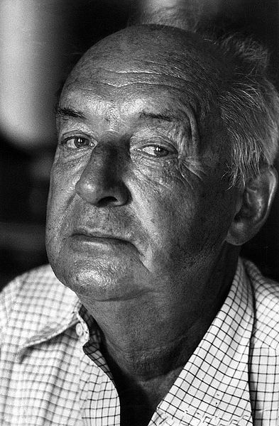

Володимир НАБОКОВ
{kind=link}

Володи́мир Володи́мирович Набо́ков (англ. Vladimir Nabokov, виступав також під псевдонімом «Сірін», 10 (22) квітня 1899, Санкт-Петербург, Російська імперія — 2 липня 1977, Монтре, Швейцарія) — американський письменник російського походження. Свої перші романи він написав російською, але міжнародне визнання він отримав лише після того, як почав писати прозу англійською у 1940 році.
Твори Набокова характеризуються складною літературною технікою, глибоким аналізом емоційного стану персонажів у поєднанні з непередбачуваним, деколи майже триллерним сюжетом. Серед відомих зразків творчості Набокова можна відзначити романи "Машенька", "Захист Лужина", "Запрошення на страту", "Дар". Популярність у широкої публіки письменник здобув після виходу в світ скандального роману "Лоліта", за яким згодом було зроблено декілька екранізацій.
Коло інтересів Набокова було надзвичайно різностороннім. Він вніс значний внесок до лепідоптерології (розділ ентомології), викладав російську і світову літературу та видав декілька курсів лекцій літературознавства, зробив переклади "Євгенія Онегіна" і "Слово о полку Ігоревім" англійською мовою, захоплювався шахами: був досить сильним практичним гравцем і опублікував ряд цікавих шахових задач.
Набоков про себе:
Біографія
Володимир Набоков народився 10 (22) квітня 1899 року в аристократичній сім’ї відомого російського політика Володимира Дмитровича Набокова. В сімейному колі Набокових використовувалися три мови: російська, англійська і французька, — таким чином, майбутній письменник досконало розмовляв трьома мовами з раннього дитинства. За власними словами, він навчився читати англійською раніше, ніж російською. Перші роки життя Набокова пройшли в комфорті та достатку в будинку Набокових на Великій Морській в Петербурзі та в їхньому заміському маєтку Батово (під Гатчиною).
Освіту почав в Тенішевськім училищі в Петербурзі, де незадовго до цього вчився Осип Мандельштам. Література та ентомологія стають двома основними захопленнями Набокова. Незадовго до революції за власні гроші Набоков видає збірку своїх віршів.
Революція 1917 року змусила Набокових перебратися в Крим, а потім, в 1919-му, взагалі емігрувати з Росії. Деякі з сімейних коштовностей вдалося вивезти з собою, і на ці гроші сім’я Набокових жила в Берліні, тоді як Володимир здобував освіту в Кембриджі, де він продовжує писати російськомовні вірші та перекладає російською мовою "Алісу в країні Чудес" Л. Керрола, яку він назвав "Аня в країні Чудес".
З 1922 року Набоков стає частиною російської діаспори в Берліні, заробляючи на життя уроками англійської мови. У берлінських газетах і видавництвах, організованих російськими емігрантами, друкуються оповідання Набокова. У 1927-му році Набоков одружується з Верою Слонім і завершує свій перший роман — "Машенька". Після чого до 1937 року створює 8 романів російською мовою, безперервно ускладнюючи свій авторський стиль і все більш сміливо експериментуючи з формою. Романи Набокова, що не друкувалися в Радянській Росії, мали успіх у західної еміграції, і нині вважаються шедеврами російської літератури ("Захист Лужина", "Дар", "Запрошення на страту").
Прихід нацистів до влади в Німеччині в кінці 1930-х років поклав кінець російській діаспорі в Берліні. Життя Набокова з дружиною-єврейкою в Німеччині стало неможливим, і сім’я Набокових переїжджає до Парижу (Франція), а з початком Другої світової війни емігрує до США. Зі зникненням російської діаспори в Європі Набоков остаточно втратив свого російськомовного читача, і єдиною можливістю продовжити творчість був перехід на англійську мову. Свій перший роман англійською мовою ("Справжнє життя Себастьяна Найта") Набоков пише ще в Європі, незадовго до від’їзду в США, з 1937 року і до кінця своїх днів Набоков не написав російською мовою жодного романа (якщо не рахувати автобіографію "Інші береги" та авторський переклад "Лоліти" російською мовою).
В Америці з 1940-го до 1958 року Набоков заробляє на життя читанням лекцій з російської та світової літератури в американських університетах. Його перші англомовні романи ("Справжнє життя Себастьяна Найта", "Bend Sinister", "Пнін"), не зважаючи на свої художні достойності, не мали комерційного успіху. У цей період Набоков близько сходиться з Е. Вілсоном та іншими літературознавцями, продовжує професійно займатися ентомологією. Подорожуючи під час відпусток по Сполучених Штатах, Набоков працює над романом "Лоліта", тема якого (історія дорослого чоловіка, що має закоханність в юну дівчину) була немислимою для свого часу, унаслідок чого навіть на публікацію роману письменник мав мало надій. Проте роман було опубліковано (спочатку в Європі, потім в Америці), що швидко принесло його авторові світову славу і фінансовий добробут. Певний час він працював у Природничому музеї Карнегі (Піттсбург), де співпрацював із російським ентомологом-емігрантом А.М.Авіновим.
Набоков повертається до Європи та з 1960 живе в Монтре, Швейцарія, де створює свої останні романи, найвідоміші з яких — "Бліде полум’я" та "Ада або Еротіада".
Письменницький стиль
У романах "Захист Лужина" (1929—30), "Дар" (1937), "Запрошення на страту" (антиутопія; 1935—36), "Пнін" (1957) — колізія духовно обдарованого одинака з тужливо-примітивним "середньолюдським" світом — "міщанською цивілізацією", або світом "вульгарності", де володарюють уявності, ілюзії, фікції. Проте Набоков не залишається на вузькосоціальному рівні, а переходить до розробки швидше метафізичної теми співвідношення різних "світів": світу реального і світу письменницької уяви, світу Берліна і світу спогадів про Росію, світу звичайних людей і світу шахового, і так далі. Вільне перетікання цих світів додає творам письменника відтінок авангардності. Також відчуття новизни та свободи цим творам дає те, що в них Набоков розробляє яскраві мовні прийоми, удосконалює свій стиль, досягаючи особливої опуклості, відчутності описів, що здаються швидкоплинними.
Сенсаційний бестселер "Лоліта" (1955) — досвід поєднання еротики, любовної прози та соціально-критичного опису традицій, одночасно із зачіпанням популярних тем, що досяг висот витонченої естетики і навіть певних філософських глибин. Одною з провідних проблем в романі опиняється проблема егоїзму, що руйнує любов.
Лірика з мотивами ностальгії; мемуари ("Пам’ять, говори", 1966).
Розповіді дивовижної ліричної сили. У мініатюрі містять багато проблем великих творів письменника: тему "іншого" світу, переплетену з ним тему швидкоплинного, невловимого переживання тощо. Найвидатніші твори в цьому жанрі: оповідання "Повернення Чорба", "Весна у Фіальте", "Різдво", "Хмара, озеро, башта", "Terra Incognita", повість "Спостерігач".
Есеїстика («Микола Гоголь», 1944).
Переклади англійською мовою "Євгенія Онєгіна" Олександра Пушкіна та "Слова о полку Ігоревім".
Поетику стилістично вишуканої прози складають як реалістичні, так і модерністські елементи (мовностилістична гра, всеосяжне пародіювання, уявні галюцинації). Принциповий індивідуаліст, Набоков іронічний у сприйнятті будь-яких видів масової психології та глобальних ідей (особливо марксизму та фрейдізму). Своєрідному літературному стилю Набокова була властива гра в шараду з ремінісценцій і головоломки із зашифрованих цитат.
Набоков — синестетик
Слово "синестезія" походить від грец. Συναισθησία і означає "змішане відчуття" (на противагу "анестезії" — відсутності відчуттів).
Синестезія — це явище сприйняття, коли при подразненні одного органу чуття разом зі специфічними для нього відчуттями виникають і відчуття, що відповідають іншому органу чуття, іншими словами, сигнали, що витікають від різних органів чуття, змішуються, синтезуються. Людина не лише чує звуки, але й бачить їх, не лише відчуває предмет, але і відчуває його смак.
Феномен синестезії відомий науці впродовж вже трьох сторіч. Пік інтересу до неї припав на рубіж XIX та ХХ століть. Тоді змішуванням відчуттів зацікавилися не тільки медики, але і люди мистецтва. Наприклад, були популярні концерти "музика + світло", в яких використовувався спеціальний орган, чиї клавіші витягували не тільки звуки, але і кольори.
Ось що писав в автобіографії Володимир Набоков: "Сповідь синестета назвуть претензійною і нудною ті, хто захищений від таких просочувань і відціджувань щільнішими перегородками, ніж захищений я. Але моїй матері все це здавалося цілком природним. Ми розговорилися про це, коли мені йшов сьомий рік, я будував замок з різноколірних азбучних кубиків і побіжно відмітив їй, що пофарбовані вони неправильно. Ми тут же з’ясували, що деякі мої букви того ж кольору, що і її, крім того, на неї оптично впливали й музичні ноти. У мені вони не порушували ніяких хроматизмів".
Окрім самого Володимира, синестетиками були його мати, його дружина; синестезією володіє і його син Дмитро Володимирович Набоков.
Серед синестетиків багато відомих осіб. Наприклад, французький поет Артур Рембо пов’язував явні звуки з певними квітами. Композитор Олександр Скрябін бачив колір музичних нот. Художник-абстракціоніст Василь Кандінський, навпаки, чув звучання фарб і навіть використовував для опису своїх картин музичні терміни: ’композиція’, ’імпровізація’.
Цікаві факти
Письменник Володимир Набоков передбачив використання смайликів. Він вважав, що наявні знаки пунктуації слід доповнити знаками, які б передавали емоції:
Олден Вітмен: Яке місце ви призначаєте собі серед письменників (нині живих) і письменників недавнього минулого?
Володимир Набоков: Я часто думаю, що повинен існувати спеціальний типографський знак, який означає посмішку, — щось начебто вигнута лінія, лежача навзнак дужка; саме цей значок я поставив би замість відповіді на ваше питання.
— інтерв'ю Набокова, опубліковане в збірнику Strong Opinions
Склав перший кросворд російською мовою, який опубліковано в додатку «Наш світ» до газети «Руль» у лютому 1925 року в Берліні.
Все життя захоплювався ентомологією-почав збирати колекцію метеликів ще у дитинстві, у віці 7 років, робив малюнки та фото метеликів, видавав наукові праці й навіть працював у Американському музеї природничої історії.
Архітектор Слів та Ловець Метеликів
Володимир Набоков — це не просто письменник, це справжній деміург літератури XX століття. Людина, яка володіла англійською «як власністю», а російською — «як спадком», він зумів створити власний, ні на кого не схожий всесвіт, де кожне речення вивірене з точністю годинникового механізму.
Від срібного віку до швейцарського готелю
Володимир Володимирович Набоков народився в Санкт-Петербурзі у вельми заможній та аристократичній родині. Його дитинство було ідилічним: три мови з пелюшок (російська, англійська, французька), найкраща освіта та перше захоплення ентомологією, яке він проніс крізь усе життя.
Революція 1917 року змусила родину емірувати. Спочатку був Кембридж, потім — Берлін та Париж. Саме в європейській еміграції під псевдонімом В. Сірін Набоков став головною зіркою «літератури у вигнанні». Проте справжня світова слава прийшла до нього вже після переїзду до США у 1940 році, коли він здійснив безпрецедентний подвиг — повністю змінив мову творчості на англійську.
Набоков був не лише майстром слова, а й серйозним вченим-ентомологом (відкрив кілька видів метеликів) та пристрасним шахістом, що відобразилося у структурі його романів, які часто нагадують складні шахові задачі.
Творчість Володимира Набокова
Романи та повісті російською мовою:
- «Машенька» / «Машенька» (1926)
- «Король, дама, валет» / «Король, дама, валет» (1927—28)
- «Захист Лужина» / «Защита Лужина» (1929—30)
- «Спостерігач» / «Соглядатай» (The Eye) (1930) — повість
- «Подвиг» / «Подвиг» (1932)
- «Камера обскура» / «Камера обскура» (1932)
- «Відчай» / «Отчаяние» (1936)
- «Запрошення на страту» / «Приглашение на казнь» (1938) — роман-антиутопія
- «Дар» / «Дар» (1937—38) (найвизначніший роман російського періоду)
- «Чарівник» / «Волшебник» (пізніше перекладений анг. - «The Enchanter») (1939) — своєрідний пролог до «Лоліти»
- «Інші береги» / «Другие берега» (1954) — автобіографія
- «Лоліта» / «Лолита» (1967, авторський російський переклад)
Романи та повісті англійською мовою:
- «Справжнє життя Себастьяна Найта» (англ. The Real Life of Sebastian Knight) (1941)
- «Під знаком незаконнонароджених» (англ. Bend Sinister) (1947)
- «Лоліта» (англ. Lolita) (1955)
- «Пнін» (англ. Pnin) (1957)
- «Бліде полум'я» / «Блідий вогонь» (англ. Pale Fire) (1962)
- «Пам'ять, говори» (англ. Speak, Memory. An Autobiography Revisited.) (1967) — автобіографія
- «Ада, або Радості пристрасті. Сімейна хроніка» (інший переклад «Ада, або Еротіада. Сімейні хроніки») (англ. Ada or Ardor: A Family Chronicle) (1969)
- «Прозорі речі» (англ. Transparent Things) (1972)
- «Дивись на арлекінів!» (англ. Look at the Harlequins!) (1974)
- «Оригінал Лаури» (англ. The Original of Laura) (2009) — видано посмертно як незавершений рукопис.
Набоков рідко працював у формі «чистої» повісті, часто вони балансували на межі з великим оповіданням або коротким романом.
Збірки оповідань та окремі знакові твори
Набоков написав десятки оповідань, які спочатку публікувалися в газетах («Руль», «Последние новости»), а згодом об'єднувалися у збірки.
Основні прижиттєві збірки:
- 1929 — «Повернення Чорба»
- 1956 — «Весна у Фіальті»
- 1958 — «Дюжина Набокова» (Nabokov's Dozen)
- 1973 — «Російська краса та інші оповідання»
- 1976 — «Деталі заходу сонця та інші оповідання»
Знакові оповідання: «Весна у Фіальті» (1936), «Хмара, озеро, вежа» (1937), «Відвідування музею» (1939), «Signs and Symbols» (1948).
Мемуаристика та лекції
Окреме місце в його спадщині посідає автобіографія, яку він переписував кілька разів різними мовами:
- 1951 — «Переконливі докази» (Conclusive Evidence)
- 1966 — «Пам'ять, говори» (Speak, Memory) — фінальна англомовна версія.
Також посмертно були видані його знамениті курси для студентів:
- 1980 — «Лекції з європейської літератури»
- 1981 — «Лекції з російської літератури»
Збірки віршів
- (без назви), Санкт-Петербург, приватне видання 1914 (не зберігся)
- «Вірші». Петроград: Худож.-графич. заклад «Уніон» (500 екз.) 1916.
- «Альманах: Два шляхи». Петроград: видавництво інж. М.С.Персона. 1918. (збірка віршів В.Набокова і А.Балашова, його товариша по навчанню по Тенішевському училищу).
- «Кетяг». Берлін: Гамаюн 1923.
- «Горний шлях». Берлін: Грані 1923.
- «Повернення Чорба: Розповіді і вірші». Берлін: Слово 1930.
- «Вірші 1929—1951». Париж: Рима. 1952.
- Poems. Garden City Нью-Йорк: Doubleday. 1959.
- Poems and Problems. Нью-Йорк, Торонто: Mcgraw-hill 1971.
- «Вірші». Енн-арбор, Мічиган: Ардіс 1979 (з передмовою В.Е.Набокової).
Екранізації творів
- Лоліта (фільм, 1962) — британсько-американський фільм режисера Стенлі Кубрика.
- Відчай (фільм, 1978) — німецько-французький фільм режисера Райнера Вернера Фасбіндера.
- Машенька (фільм, 1991) — російський фільм режисера Тамари Павлюченко.
- Мадемуазель О. (фільм, 1993)
- Лоліта (фільм, 1997) — американо-французький фільм режисера Едріана Лайна.
- Захист Лужина (фільм, 2000) — англо-французький фільм режисера Марлін Горіс.
Театральні постановки
- Жага — за мотивами роману «Камера обскура», режисер-постановник Ольга Канарченко (Попова), театр Тисячоліття, Київ, 2017.
Останній роман Володимира Набокова
Останній твір великого письменника: «The Original of Laura» («Оригінал Лаури»). За вісім місяців до своєї смерті Володимир Набоков писав одному зі своїх кореспондентів, що книга «The Original of Laura» була «почата ним до хвороби і завершена „в думках“, але не на папері».
Володимир Набоков залишив заповіт, в якому розпорядився знищити рукопис після його смерті. Вдова письменника Віра після кончини Набокова в 1977 році не виконала останню волю чоловіка і заповідала перед власною смертю в 1991 році зробити це своєму синові.
Син письменника, оперний співак Дмитро Набоков, відгукувався про незавершений проєкт батька, як про «найвидатніший» твір письменника. Він хотів помістити рукопис в якому-небудь університетському архіві, музеї або фонді, щоб доступ до неї мав лише обмежений круг учених. Проте в своєму листі, відправленому в листопаді 2005 року електронною поштою літературному оглядачеві газети The New York Observer Рону Розенбауму (Ron Rosenbaum), він говорить, що має намір знищити книгу перед своєю смертю. Потім він раптово повідомив про свій намір видати рукопис.
Обсяг і зміст рукопису напевно невідомі. У 1989 році журналіст газети Washington Post писав, що від третини до половини роману існує в остаточному вигляді. Деякі інші експерти вважають, що рукопис складається з 30—40 сторінок, можливо, робочих карток, якими користувався Набоков при роботі над чернетками. Повідомлялося також, що у книги була й інша робоча назва — Dying is fun («Вмирати весело»).
Український переклад презентували 7 листопада 2009 р. у Києві, на 10 днів швидше презентації англійською мовою, котра відбулася 17 листопада у США та Великій Британії.
Музеї
У жовтні 2006 року в петербурзькому музеї Володимира Набокова проходить фотовиставка «Набоковські адреси», де представлені фотографії будинків, в яких жив Набоков із сім'єю. Автори фото — Д.Конрадт, Д.Ріппл, І.Казноб, А.Наката і головний хранитель «Музею Набокова» Є.Кузнецова.
На честь Володимира Набокова в 1985 році названий астероїд 7232 Набоков.
Переклади українською
- Владімір Набоков: Лоліта (2008). Переклад з російської: Петро Таращук, передмова та примітки Павла Бабая. Художники: Б. Бублик, В. Мурликін. Харків: Фоліо. 412 с. ISBN 978-966-03-4128-9
- Владімір Набоков. Оригінал Лаури: (Насолода вмирати) (2009). Переклад з англійської: Петро Таращук. Харків: Фоліо. 318 стор. ISBN 978-966-03-4968-1.
- Володимир Набоков. Лоліта (2018). Переклад з англійської: Дмитро Дроздовський. Харків: КСД. 432 стор. 2018. ISBN 978-617-12-4560-0
- Володимир Набоков. «Справжнє життя Себастьяна Найта». — Харків: КСД, 2019, 222 стор. ISBN 978-617-12-5881-5. Переклав Олег Король
У 2009 році також з'явився неофіційний український переклад роману «Лоліта» з російської Кирила Васюкова.
Володимир Набоков помер у 1977 році в Монтре (Швейцарія), залишивши по собі репутацію одного з найскладніших та найестетичніших авторів в історії. Його тексти — це інтелектуальна насолода для тих, хто любить шукати приховані смисли та насолоджуватися бездоганною формою.
Книги Володимира Набокова в перекладі українською мовою ви також можете переглянути на сайті chtyvo.org.ua.